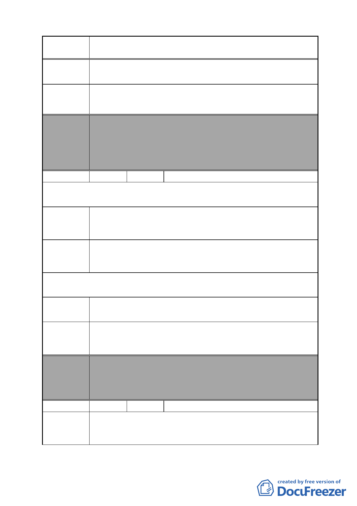

案 名 變更臺北市南港區鐵路地下化沿線土地主要計畫案
陳情理由
建議辦法
1.高壓變電所不應設置於人口稠密之處，影響周邊發展。
2.高壓變電所將危及鄰近住戶生命財產之安全。
1.移至鄰近山區。
2.移至大型公園中。
委員會
決議
編號
本案除文字誤繕應再作修正外，其餘依市府本次會議所送修
正計畫書內容通過。
（依市府本次會議所送修正計畫書，本案將變電所用地自本
次計畫範圍剔除，俟台電公司另尋適當替代的設置地點，另
案辦理都市計畫變更）
27 陳情人 李永旭
第 1 次陳情（97.11.26.）
陳情理由
建議辦法
1.本區重劃後配回之土地與建物，需依照公平、公正合理的原
則下進行。
2.地主權益為先請勿犧牲個別地主權益。
1.原地重新規劃後原地照比例歸還原地主。
2.地主可聯合地主共同建設合併開發。
3.請列出具體的住戶安置計畫與時程。
第 2 次陳情（98.4.6..）
該計畫無安置居民的完整配討措施，且規劃不夠嚴謹，不
陳情理由 清楚整個計畫到底在作什麼。
請直接將本住戶（南港路 2 段 23 巷 1 號）剔除在計畫內，免
建議辦法 日後許多爭議，反對。
請列出具體的住戶安置計畫與時程。
委員會
決議
編號
陳情理由
本案除文字誤繕應再作修正外，其餘依市府本次會議所送修
正計畫書內容通過。
（依市府本次會議所送修正計畫書，本案陳情地點因位於計
畫區 D 街廓內，故仍予納入市地重劃範圍）
28 陳情人 孔張阿菊、黃協和、黃裕翔、刁成德
1.同意本區（D）變更為商業區。
2.本次主要計畫均未通知本區居民，影響居民權益，且讓本區
居民對後續開方方式產生不安。
- 38 -